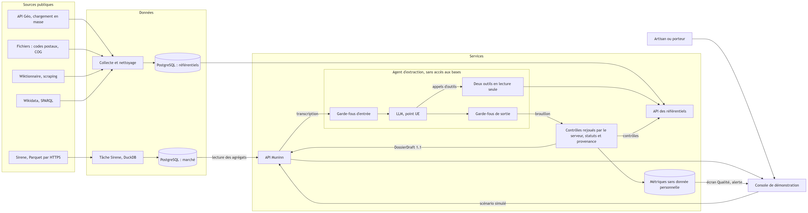

Revue de conception avant développement. Source : dossier de conception V1, v1.5 (14 octobre 2026),
et décisions D-01 à D-51. Les valeurs marquées [H] sont des hypothèses non mesurées.
1Énoncé du problème
Un artisan dépanneur qui travaille seul (plombier, chauffagiste, électricien, serrurier) ne peut pas
décrocher pendant ses interventions. Les demandes reçues par téléphone sont notées à la main puis ressaisies.
Le système doit transformer un appel manqué en une donnée structurée, contrôlée et exploitable, sans saisie
par l'artisan, ni stockage du contenu en clair côté serveur dans la cible.
N°
Exigence fonctionnelle de la V1
Vérifiée par
EF-1
Une transcription d'appel produit un dossier : nom, téléphone, commune, code postal, objet, urgence
CA-1
EF-2
Une valeur absente ou ambiguë est complétée ou départagée par des outils de recherche, jamais inventée
CA-2
EF-3
Une odeur de gaz déclenche une urgence de sécurité et une orientation vers les secours
CA-3
EF-4
Une consigne glissée par l'appelant reste sans effet ; aucune donnée de santé n'est gardée
CA-4
EF-5
L'artisan corrige et valide ; le serveur rejoue les contrôles
CA-5
EF-6
Une version dégradée de l'agent est bloquée en CI ; la production revient en arrière en une opération
CA-6
EF-7
Un appel qui n'est pas une demande de service produit un message, pas un dossier
CA-7
EF-8
Un appel synthétique est joué, transcrit, puis traité
CA-8
2Contraintes
Règle
Contenu
R1
Aucun dossier client en clair côté serveur (cible ; écart P-03 assumé en V1)
R2, R3
Audio détruit après extraction ; transcription éphémère, jamais journalisée
R4
Aucune donnée personnelle dans les journaux
R5
Traitement dans l'UE ; déploiements LLM en zone de données UE
Propriétaire d'un seul groupe de ressources, lecteur sur l'abonnement
Échéances
Oraux blancs les 29 et 30 octobre (E1, E3), puis les 12 et 13 novembre (E1 à E5)
3Architecture

Composant
Rôle
Technologie
Collecte et référentiels
Communes, codes postaux, lexique métier, chargés et nettoyés
Python, PostgreSQL, API Géo, fichiers, Wiktionnaire, Wikidata
Marché
Agrégats Sirene lus à distance
Tâche Container Apps, DuckDB sur Parquet
Voix
Synthèse du dialogue à deux voix, transcription avec séparation des locuteurs
Azure AI Speech, Entra ID, West Europe
Qualification
Une catégorie fermée par appel ; dossier ou message
LLM, sortie structurée ; règles du serveur
Agent d'extraction
Boucle d'appels d'outils bornée, deux outils en lecture seule
gpt-5.4-mini, zone de données UE, sans framework d'agents
Contrôles du serveur
Commune et code postal rejoués ; règles gaz, santé, anti-invention ; statuts et provenance
Code déterministe
API et console
Contrat DossierDraft 1.1 ; console de démonstration accessible
FastAPI, Jinja2, HTMX ; WCAG 2.2 AA contrôlé par axe-core
Observabilité
Métriques sans donnée personnelle ; traces LLM masquées ; alerte
PostgreSQL, Langfuse (UE), Application Insights
4Décisions et alternatives écartées
Décision
Alternative écartée
Raison
Agent outillé et ancré, une tâche d'extraction
Pipeline fixe ; multi-agents ; RAG
Les décisions (compléter, départager) dépendent de l'appel ; une seule tâche ; aucun corpus à indexer
Qualification par une étape de classification (D-48)
Un « agent routeur »
Décision fermée, sans outil ; erreurs asymétriques gérées par le serveur
gpt-5.4-mini, zone de données UE (D-44)
Mistral-Large-3 ; déploiement mondial
Quota épuisé ; traitement hors UE exclu (R5)
Azure AI Speech (D-50)
Modèles de transcription OpenAI
Aucun en zone de données UE ; Speech ne conserve pas les données en transcription rapide
Langfuse Cloud UE, traces masquées (D-49)
Langfuse auto-hébergé
Guide Azure sur AKS, hors budget ; R3 impose le masquage
DuckDB sur Parquet distant
Synapse ; chargement dans PostgreSQL
Synapse non disponible sur l'abonnement ; 74 millions de lignes
Identités managées et OIDC (D-47)
Application Entra avec secret
Droits limités au groupe de ressources ; aucun secret à gérer
Retour arrière par le trafic entre révisions
Redéploiement de l'image précédente
Une opération, sans reconstruction
Dérogations au socle : DuckDB ; Langfuse (v1.5, validé par le formateur le 14 octobre 2026). Azure AI Speech est un service
de la ressource Foundry déjà retenue.
5Plan de validation
Critère
Oracle
Condition
CA-1 à CA-6
Valeurs attendues figées (annexe A du dossier), comparées après normalisation
Sur Azure, avec le LLM retenu, 3 exécutions sur 3
CA-7
Catégorie et nature de la sortie (message ou dossier) de SC-Q1 à SC-Q8
3 exécutions sur 3 ; SC-Q3, SC-Q4, SC-Q7 bloquants en CI
CA-8
Dossier de SC-01 en 45 s depuis le clic ; aucun octet audio côté serveur
Sur Azure
Évaluation en CI
20 scénarios, 5 cas de conformité à tolérance nulle, base sans outils
Contrôle verdict requis pour fusionner
Limite : 20 scénarios ne prouvent pas un taux de 90 % ; ils détectent les régressions et protègent les cas critiques.
6Engagement de la V1 : ce qui est tenu, ce qui ne l'est pas
Élément
Contenu
Charge [H]
Sprint
État au 14 octobre
V-01 à V-03
Socle, Azure, CI verdict, livraison continue, retour arrière
1 j
2
Fait, prouvé
V-04 à V-06
Collecte, référentiels, API, Sirene
1,75 j
3
À faire
V-07, V-08
Agent outillé, garde-fous, évaluation bloquante
2,5 j
4
À faire
V-11, V-13
Qualification des appels ; Langfuse
1 j
4
À faire
V-09, V-10, V-12
Console, vigie, voix simulée
1,5 j
5
À faire
Hors V1
Raison
Téléphonie réelle, renvoi d'appel, agent vocal temps réel
R10 ; inconnues techniques (section 7)
Application mobile, chiffrement pour l'appareil
La console joue l'appareil (écart P-03)
Rendez-vous, SMS, débrief, dépenses, export
Une seule fonctionnalité métier en V1
Carnet de contacts, notification
Qualification réduite (D-48)
Comment on sait que ça marche
Mesure
Chaque fusion
verdict : lint, 29 tests, build, secrets
Chaque livraison
Révision contrôlée avant bascule : santé, SHA, appel au modèle
Fin de V1
CA-1 à CA-8 sur Azure
En continu
Écran Qualité, alerte, traces Langfuse
7Risques et inconnues
Risque ou inconnue
Effet
Parade
Capacité de 7,75 j non mesurée
La V1 déborde sur la réserve
Langfuse retiré en premier ; « si temps » abandonnés
L'agent ne tient pas les seuils sur 20 scénarios
Critères non atteints
Ajustements sur la partition de développement ; seuil revu par décision écrite
Un client classé « personnel »
Chantier perdu
Dans le doute, dossier « à vérifier » ; cas bloquants en CI
Numéro d'origine non transmis lors d'un renvoi d'appel
Pas de numéro de rappel fiable
Essai borné après la certification ; repli : numéro dédié
Reconnaissance sur audio téléphonique à 8 kHz
Qualité des dossiers inconnue en réel
Mesure sur appels réels après la certification ; la V1 n'utilise que de l'audio de synthèse
PostgreSQL ouvert aux services Azure
Exposition à d'autres clients Azure
Accepté en V1 (D-47) ; TLS exigé, mot de passe aléatoire
Route LLM publique et payante
Coût d'appels abusifs
Limite globale : 10 par minute, 200 par jour
8État mesuré au 14 octobre 2026
Mesure
Valeur
Source
Sprint 2
11 étapes sur 11 ; critères du pair P1 à P5 prouvés
sprints/sprint-2/compte-rendu.md
CI sur une PR
93 à 154 s, moyenne 108 s (15 exécutions)
GitHub Actions
Livraison, de la fusion à la production
8 à 10 min (6 livraisons)
GitHub Actions
Retour arrière, jusqu'au service vérifié
36 à 66 s (4 bascules)
preuves/etape-8-retour-arriere.md
Voix : synthèse et transcription
1,4 s et 2,1 s pour 22 s d'audio ; 2 locuteurs séparés sans erreur (un essai)
D-50
Incidents
2, résolus et documentés
INC-01, INC-02
Peu d'exécutions : ce sont des ordres de grandeur, pas des engagements de service.